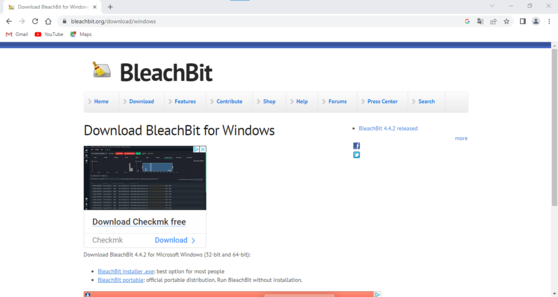
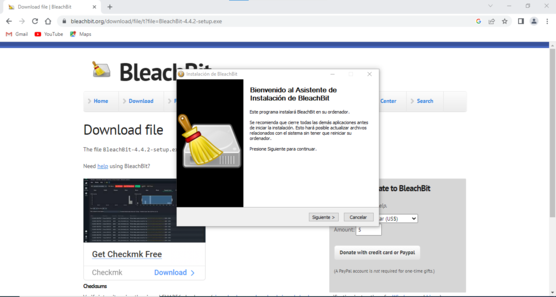
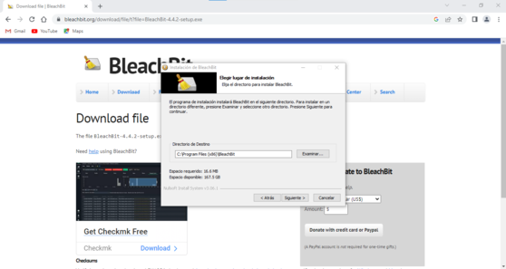
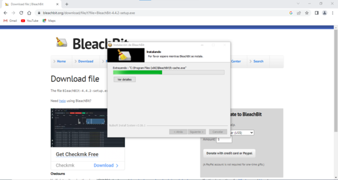
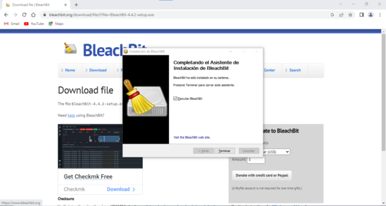
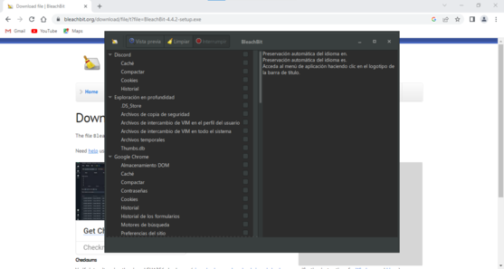

Windows
1Primer paso
Descargar Bleachbit para Windows de la página oficial.
2Segundo paso
Ejecutar el instalador de bleachbit y marcar siguiente en el asistenete de la instalación.
3Tercer paso
Elegir la ruta donde queremos instalar bleachbit.
4Cuarto paso
BleachBit se está instando.
5Quinto paso
Bleachbit está instalado.
6Sexto paso
Interfaz de BleachBit.
